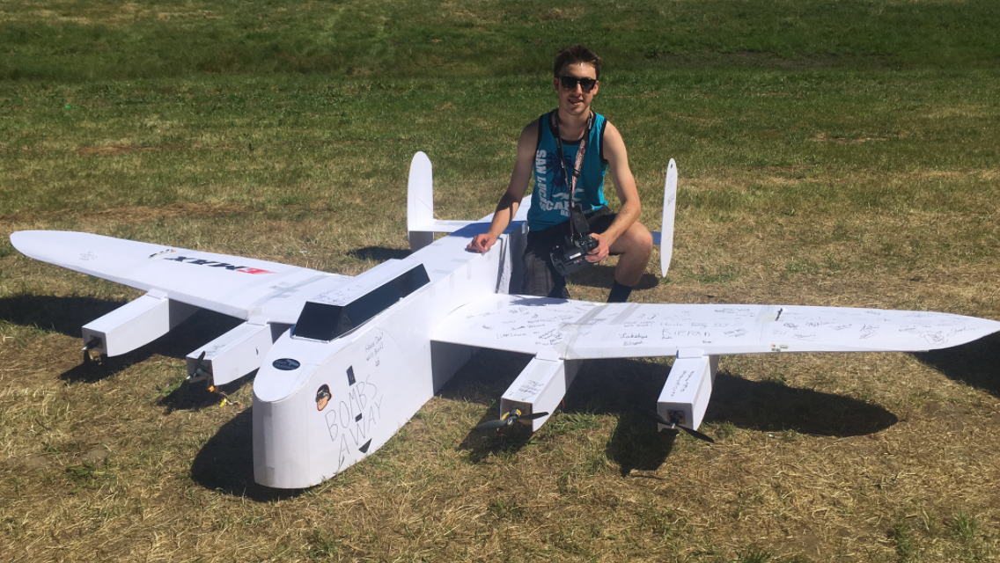
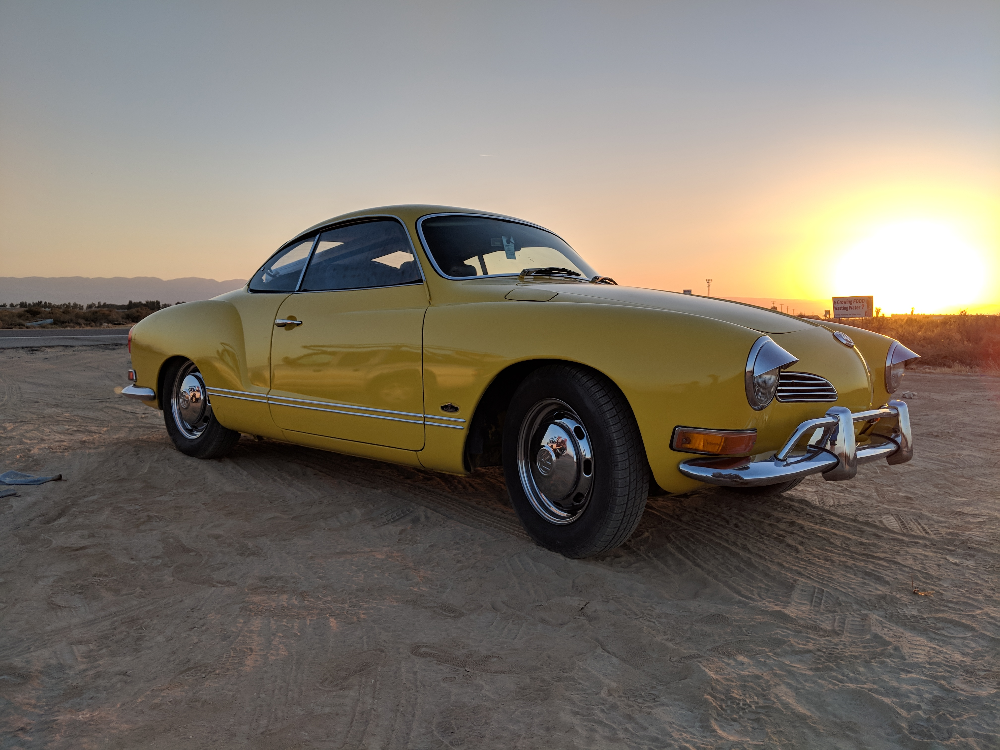
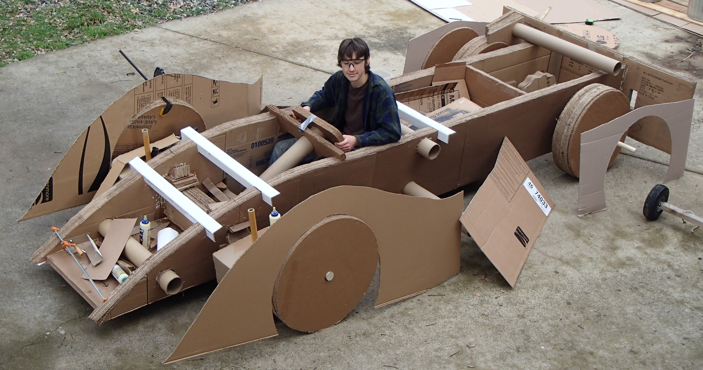
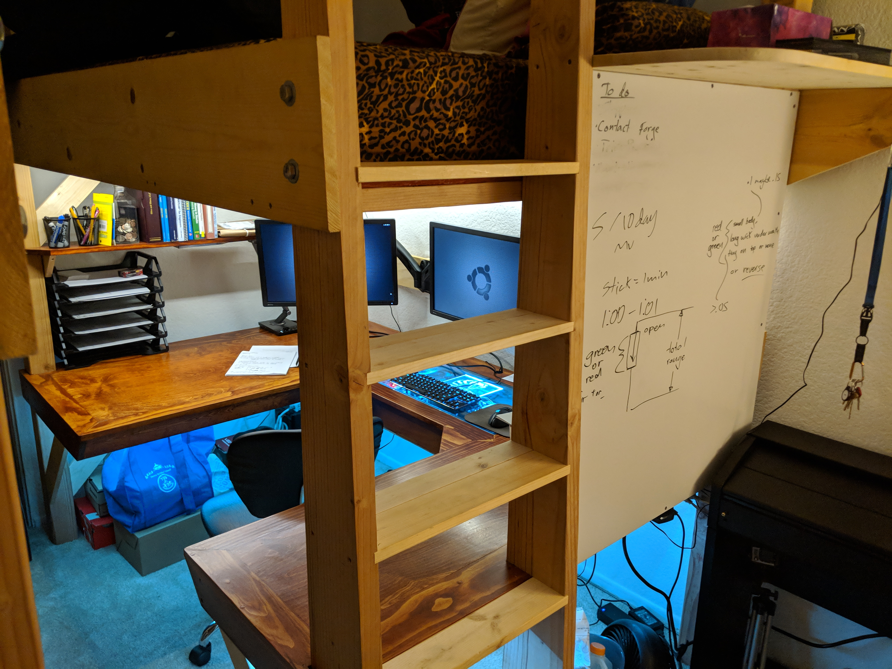

Lancaster
A 24 hour build with a couple of friends. I built this Lancaster at Flite Fest West where it completed one successful flight before being disassembled.

VW Karmann Ghia
My Karmann Ghia has taught me more about tuning engines and repairing wiring looms than any class could hope to. As an exercise to learn about air cooled engines I have maintained this car and taken it everywhere with me since 2015.

Cardboard Car
To break the record for longest run with a cardboard car (the rules being 2 wood axles, cardboard, and glue only) My friends and I built a pair of cars beginning with the challenge of roller bearings and building to fully functional steering.

Desk and Bed
College life is centered around a desk and bed, so I figured it may as well be comfortable. Over the course of a week I designed and built a piece of furniture to fit my exact needs, with a PC in the center, shelves, whiteboards, and lighting built in around the edges. It is fully collapsible and easy transport as well, and only cost me half of what a normal lofted bed frame would.